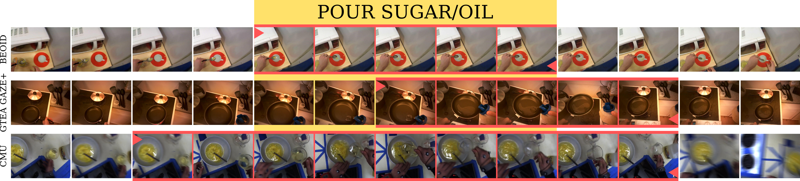
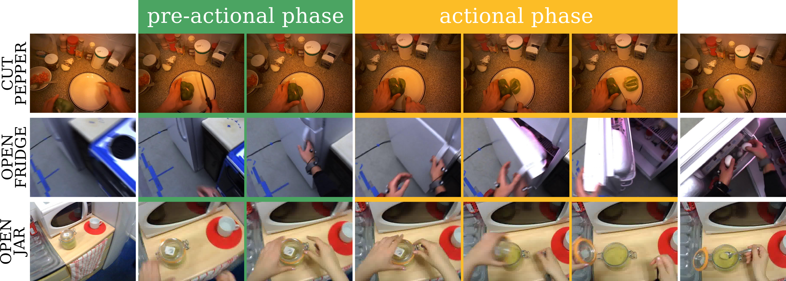

Davide Moltisanti, Michael Wray, Walterio Mayol-Cuevas, Dima Damen

Manual annotations of temporal bounds for object interactions (i.e. start and end times) are typical training input to recognition, localisation and detection algorithms.
For three publicly available egocentric datasets, we uncover inconsistencies in ground truth temporal bounds within and across annotators and datasets.
We systematically assess the robustness of state-of-the-art approaches to changes in labelled temporal bounds, for object interaction recognition.
As boundaries are trespassed, a drop of up to 10% is observed for both Improved Dense Trajectories and
Two-Stream Convolutional Neural Network.
We demonstrate that such disagreement stems from a limited understanding of the distinct phases of an action, and propose annotating based on the Rubicon Boundaries,
inspired by a similarly named cognitive model, for consistent temporal bounds of object interactions. Evaluated on a public dataset, we report a 4% increase
in overall accuracy, and an increase in accuracy for 55% of classes when Rubicon Boundaries are used for temporal annotations.
